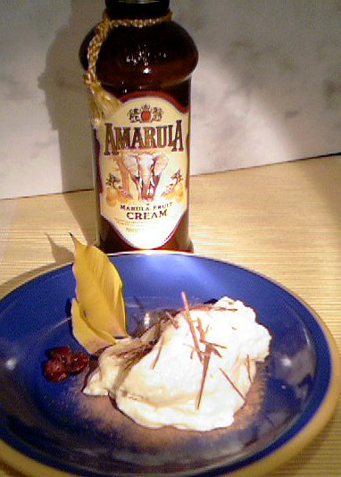

| Zutaten für 6 Personen: | |
| 240 g | weisse Schokolade |
| 3 | Eiweiss |
| 1 El | Zucker |
| 180 ml | Rahm |
| 4 cl | Amarula alternativ: Bailey's oder Cape Velvet |
Die Schokolade schmelzen.
Die Eiweiss steif schlagen.
Den Esslöffel Zucker zum Eiweiss geben und gut vermischen.
Den Rahm steif schlagen.
Den Amarulla mit der geschmolzenen Schokolade verrühren.
Den Rahm dazu mischen und anschliessend das Eiweiss unterheben.
In eine Schale geben und im Kühlschrank 3 Stunden fest werden lassen.
Kann im Tiefkühler angeblich 2 Monate lagern. (Aber wer würde das denn tun?)
Von Sandra irgendwo im Web oder in Kapstadt aufgetrieben.
Muss wohl gut gewesen sein. RE, 8.10.2006
Ich habe das nun am 17.2.2007 selber ausprobiert. Das Resultat war nicht hervorragend. Ich behaupte das liegt daran, dass Frau Lebensmittelingenieurin die wichtigsten Geheimnisse des Rezeptes nicht preis gegeben hat. Sie meinte etwas von "Temperaturen". Angeblich ist es meine Schuld weil ich mit Halbrahm statt Vollrahm hantiert habe. Eiweiss könne man angeblich solange schlagen wie man will und es wird nur immer fester während beim Rahm bald einmal der Punkt wo es nicht mehr weiter geht käme. Nun, es hat geschmeckt aber es war eher flüssig. Warum 240 Gramm Schoggi? Damit der Koch die anderen 60g der dritten Tafel selber wegfuttern kann? RE.
@LINKBACK_TAG@ @WAKELOCK@